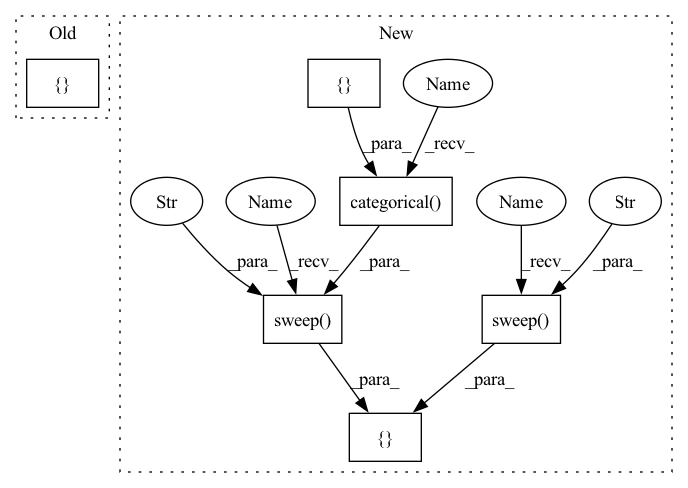

Pattern ID :36012

Before Change
def get_sweep(hyper):
num_trials = 5
return hyper.zipit([
hyper.loguniform("base_learning_rate", hyper.interval(1e-3, 0.1)),
hyper.loguniform("one_minus_momentum", hyper.interval(1e-2, 0.1)),
hyper.loguniform("l2", hyper.interval(1e-5, 1e-3)),
], length=num_trials)
// return hyper.product([
// // hyper.sweep("dempster_shafer_ood", hyper.categorical([False, True])),
After Change
def get_sweep(hyper):
return hyper.product([
hyper.sweep("dempster_shafer_ood", hyper.categorical([False, True])),
hyper.sweep("seed", hyper.discrete(random.sample(range(1, int(1e10)),
5))),
])
In pattern: SUPERPATTERN
Frequency: 3
Non-data size: 6
Instances
Fragment ID: 102317341
Project Name: google/uncertainty-baselines
Commit Name: a9a35b30c18a9ddc418ff10e91347a6f652e528a
Time: 2021-10-11
Author: jjren@google.com
File Name: baselines/cifar/experiments/deterministic_tune.py
M Class Name: AnonimousClass
N Class Name: AnonimousClass
M Method Name: get_sweep(1)
N Method Name: get_sweep(1)
M Parent Class:
N Parent Class:
M File Name: baselines/cifar/experiments/deterministic_tune.py
N File Name: baselines/cifar/experiments/deterministic_tune.py
M Start Line: 55
M End Line: 60
N Start Line: 60
N End Line: 64
'>
Before Change
def get_sweep(hyper):
return hyper.product([
hyper.sweep("seed", list(range(10))),
])
After Change
def get_sweep(hyper):
return hyper.product([
hyper.sweep("seed", list(range(10))),
// hyper.sweep("gp_mean_field_factor", hyper.categorical([1, 5, 7.5, 10,
// 20])),
// hyper.sweep("spec_norm_bound", hyper.categorical([1, 2, 6, 10])),
hyper.sweep("use_spec_norm", hyper.categorical([False, True])),
hyper.sweep("use_gp_layer", hyper.categorical([False, True])),
hyper.sweep("dempster_shafer_ood", hyper.categorical([False, True])),
])
'>
Fragment ID: 102317353
Project Name: google/uncertainty-baselines
Commit Name: a6d65ef024898167260fb13f0c55cf70a4455b32
Time: 2022-11-06
Author: jjren@google.com
File Name: baselines/cifar/experiments/sngp_tune.py
M Class Name: AnonimousClass
N Class Name: AnonimousClass
M Method Name: get_sweep(1)
N Method Name: get_sweep(1)
M Parent Class:
N Parent Class:
M File Name: baselines/cifar/experiments/sngp_tune.py
N File Name: baselines/cifar/experiments/sngp_tune.py
M Start Line: 60
M End Line: 62
N Start Line: 54
N End Line: 62
'>
Before Change
// hyper.loguniform("one_minus_momentum", hyper.interval(1e-2, 0.1)),
// hyper.loguniform("l2", hyper.interval(1e-5, 1e-3)),
// ], length=num_trials)
return hyper.product([
// hyper.sweep("dempster_shafer_ood", hyper.categorical([False, True])),
])
After Change
def get_sweep(hyper):
return hyper.product([
hyper.sweep("use_spec_norm", hyper.categorical([False, True])),
hyper.sweep("use_gp_layer", hyper.categorical([False, True])),
hyper.sweep("dempster_shafer_ood", hyper.categorical([False, True])),
hyper.sweep("seed", hyper.discrete(random.sample(range(1, int(1e10)),
5))),
])
'>
Fragment ID: 102317343
Project Name: google/uncertainty-baselines
Commit Name: a9a35b30c18a9ddc418ff10e91347a6f652e528a
Time: 2021-10-11
Author: jjren@google.com
File Name: baselines/cifar/experiments/sngp_tune.py
M Class Name: AnonimousClass
N Class Name: AnonimousClass
M Method Name: get_sweep(1)
N Method Name: get_sweep(1)
M Parent Class:
N Parent Class:
M File Name: baselines/cifar/experiments/sngp_tune.py
N File Name: baselines/cifar/experiments/sngp_tune.py
M Start Line: 62
M End Line: 64
N Start Line: 58
N End Line: 64